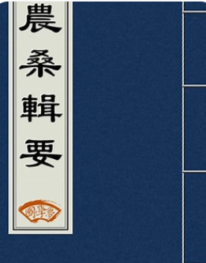

农学古籍
书名
-
1 齐民要术 北魏 农业

作者：
ISBN：1
朝代：北魏
性质：农政
-
2 吕氏春秋·上农四篇 战国 农业
作者：
ISBN：2
朝代：战国
性质：农本思想
-
3 四民月令 东汉 农业

作者：
ISBN：5
朝代：东汉
性质：月令体
-
4 氾胜之书 西汉 农业
作者：
ISBN：6
朝代：西汉
性质：区田法
-
5 王祯农书 元代 农业

作者：
ISBN：7
朝代：元代
性质：农器图谱
-
1 农政全书 明代 农业
作者：
ISBN：3
朝代：明代
性质：农政
-
2 授时通考 清代 农业
作者：
ISBN：4
朝代：清代
性质：官修农书
-
3 群芳谱 明/清 农业

作者：
ISBN：8
朝代：明/清
性质：植物学
-
4 月令七十二候集解 元代 农业
作者：
ISBN：9
朝代：元代
性质：节气历法
-
5 夏小正 先秦 农业

作者：
ISBN：10
朝代：先秦
性质：物候历
-
1 月令广义 明代 农业
作者：
ISBN：11
朝代：明代
性质：节气民俗
-
2 陈旉农书 宋代 农业

作者：
ISBN：12
朝代：宋代
性质：江南农事
-
3 农桑辑要 元代 农业
作者：
ISBN：13
朝代：元代
性质：官修农书
-
4 天工开物 明代 农业
作者：
ISBN：14
朝代：明代
性质：手工业
-
5 岁时广记 宋代 农业
作者：
ISBN：15
朝代：宋代
性质：节气民俗
-
1 淮南子·时则训 西汉 农业

作者：
ISBN：16
朝代：西汉
性质：月令体系
-
2 礼记·月令 西汉 农业
作者：
ISBN：17
朝代：西汉
性质：经典月令
-
3 沈氏农书 明代 农业
作者：
ISBN：18
朝代：明代
性质：江南农技
-
4 三农纪 清代 农业

作者：
ISBN：19
朝代：清代
性质：山区农业
-
5 农桑衣食撮要 元代 农业

作者：
ISBN：20
朝代：元代
性质：月令体
-
1 田家五行 元代 农业
作者：
ISBN：21
朝代：元代
性质：气象农谚
-
2 农候杂占 明代 农业
作者：
ISBN：22
朝代：明代
性质：占候术
-
3 农丹 清代 农业
作者：
ISBN：23
朝代：清代
性质：地气理论
-
4 知本提纲·农则 清代 农业

作者：
ISBN：24
朝代：清代
性质：理学农学
-
5 农圃便览 清代 农业
作者：
ISBN：25
朝代：清代
性质：山东农技
农书内容涉及比重排名
书名
作者
-
1 种植业 9.85
-
2 土壤与耕作 9.64
-
3 农具与农田水利 9.57
-
4 畜牧业 9.43
-
5 蚕桑业 9.26
-
6 农产品加工与储藏 9.15
-
7 园艺与林业 9.04
-
8 气象与农事历法 8.80
-
9 农业经济与政策 8.75
地域信息(审图号：GS(2024)0650号)
农学古籍
约550本
农具数
约280种
作物数
约150种
农谚数
2万余条
养殖种数
约50种
作物占比
工具占比
农畜词频排行
- 1 蚕
- 2 猪
- 3 牛
- 4 鸡
- 5 羊
- 6 鱼
- 7 马
- 8 驴
- 9 兔